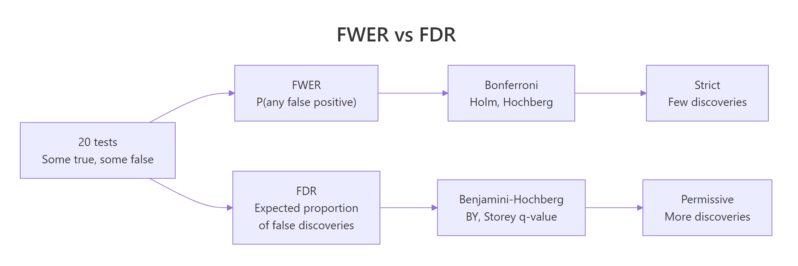
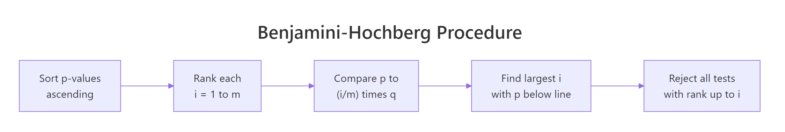
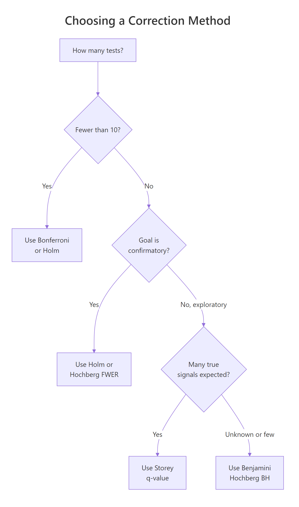

Multiple Testing in R: Control False Discoveries Without Losing All Your Power
When you run many hypothesis tests at once, some p-values below 0.05 will be false alarms by pure chance. Multiple testing correction keeps that noise under control. Bonferroni is strict, Benjamini-Hochberg balances discovery with error, and Storey's q-value squeezes out more power when real signals are plentiful.
Why does running many tests break p = 0.05?
A single test at alpha = 0.05 has a 5% chance of a false alarm under the null. Run 20 independent tests at once and the chance that at least one rejects by accident jumps to about 64%. The p-values are not wrong, they mean what they say: one in twenty. Multiple testing correction is what you need the moment you stop asking "is this one test significant?" and start asking "is any of these significant?" Let's simulate it.
Even though each test on its own has a 5% error rate, the family of 20 tests has a 64% chance of producing at least one false alarm. That's the core problem: the more shots you take at the null, the more bogus "significant" results slip through. Running dozens of tests without correction essentially guarantees false discoveries.
The simulation matches a simple formula. If the tests are independent, the probability that none of them reject by accident is $(1-\alpha)^m$, so the probability that at least one does is $1 - (1-\alpha)^m$. We can tabulate it directly.
Ten tests already inflate the error rate past 40%. By 100 tests you are almost guaranteed a false positive. A picture makes the explosion obvious.
The dashed line is the 0.05 you thought you had. The curve is the 0.05 you actually have once you run more than a single test. Correction methods are the tools that pull the curve back down toward the dashed line.
Try it: Compute the family-wise error rate for ex_m = 10 tests at ex_alpha = 0.01. Use the analytic formula.
Click to reveal solution
Explanation: Lowering alpha from 0.05 to 0.01 keeps the family-wise error to about 10% for 10 tests, instead of 40%. Tightening alpha is one (blunt) way to protect against FWER blow-up, but it throws away power on every test.
What is the family-wise error rate vs. the false discovery rate?
Every correction method targets one of two quantities. They sound similar but commit to very different tradeoffs, so picking a method starts with picking the quantity.

Figure 1: FWER controls "any false positive" while FDR controls the fraction of false discoveries.
The family-wise error rate (FWER) is the probability of making at least one false rejection across the family of tests. Controlling FWER at 0.05 means: there is at most a 5% chance that any of your rejected hypotheses is null. This is the strict, cautious stance, appropriate when a single false positive is expensive (regulatory approvals, clinical trials).
The false discovery rate (FDR) is a different animal. It is the expected fraction of false positives among the tests you reject. Controlling FDR at 0.05 means: on average, 5% of your "discoveries" are noise. The other 95% are real. This relaxes the guarantee but keeps many more true effects.
| Quantity | Definition | Attitude | Example methods |
|---|---|---|---|
| FWER | P(any false rejection) | "Not one false alarm" | Bonferroni, Holm, Hochberg |
| FDR | E[false rejections / rejections] | "Most of my alarms are real" | Benjamini-Hochberg, BY, Storey |
A concrete example shows how much the two differ in practice. Suppose we run 20 tests where 5 have real effects and 15 are genuinely null, and we look at which get rejected at the raw 0.05 threshold.
Six tests reject at the raw 0.05 threshold. Five are genuine, one is a false positive. FWER says "there is at least one mistake, unacceptable." FDR says "1 in 6 rejections is wrong, 17% is too high but manageable." Neither view is wrong, they just answer different questions.
Try it: Given the eight p-values below, count the unadjusted rejections at 0.05 and the Bonferroni rejections at FWER = 0.05 (Bonferroni threshold is alpha / m).
Click to reveal solution
Explanation: The Bonferroni threshold here is 0.05 / 8 = 0.00625. Only the smallest p-value (0.001) clears it.
How does Bonferroni correction work?
Bonferroni is the simplest multiple testing adjustment. You either tighten the significance threshold from alpha to alpha / m, or equivalently multiply each p-value by m and cap at 1. That's it.
$$p_i^{\text{Bonferroni}} = \min(1, \; m \cdot p_i)$$
Where:
- $p_i$ = raw p-value for test $i$
- $m$ = number of tests in the family
- $p_i^{\text{Bonferroni}}$ = Bonferroni-adjusted p-value, compare to alpha as usual
Why does this work? If you reject only tests whose raw p-value is below alpha / m, then by the union bound the probability of any false rejection across m tests is at most $m \cdot (\alpha/m) = \alpha$. Bonferroni is correct even when tests are correlated. That universality is its strength and its curse: it gives up power to handle worst-case dependence that usually isn't there.
The p.adjust() function returns adjusted p-values directly, so you always compare the output to alpha (0.05), not to alpha / m. This makes the numbers easier to reason about and to compare across methods.
Only one of the five real signals survives Bonferroni at alpha = 0.05. The rest get swamped because 0.05 / 20 = 0.0025 is a punishing bar. Bonferroni trades power for certainty, which is often the wrong trade for exploratory work.
Holm's step-down procedure keeps the same FWER guarantee while giving back some power. Sort the p-values smallest-to-largest, compare the i-th sorted p-value to alpha / (m - i + 1), and reject in order until one fails.
Holm's adjustments are uniformly smaller than or equal to Bonferroni's, never larger, so Holm rejects a superset of what Bonferroni rejects. Same FWER guarantee, strictly better or equal power. There is essentially no reason to prefer Bonferroni over Holm in modern practice.
p.adjust(x, "holm") is just as short. Bonferroni survives mostly because it is easy to explain, not because it is better.Try it: Apply Bonferroni to the p-values below and count survivors at alpha = 0.05.
Click to reveal solution
Explanation: Multiplying each p by 5 gives 0.005, 0.040, 0.195, 0.205, 0.210. Two values clear 0.05, so two tests survive. (If your intuition said "1 survivor" from the prompt, check again. 0.008 * 5 = 0.040 < 0.05.) This is exactly why multiplying p-values by m and recomparing to alpha is so easy to reason about.
How does the Benjamini-Hochberg procedure control FDR?
The Benjamini-Hochberg (BH) procedure is the default for exploratory work. Instead of protecting against any false positive, it controls the proportion of false positives among the tests you reject. That's usually the scientifically interesting quantity.

Figure 2: The Benjamini-Hochberg procedure in four steps.
The procedure itself is a one-liner once you see it. Sort the p-values ascending, and compare the i-th sorted value to the line $\tfrac{i}{m} q$ where $q$ is the FDR target. Find the largest $i$ where the p-value is still below the line, and reject every test from rank 1 up to that $i$.
$$\text{Reject tests } p_{(1)}, \ldots, p_{(k)} \text{ where } k = \max\left\{i : p_{(i)} \leq \frac{i}{m} q\right\}$$
Where:
- $p_{(i)}$ = the i-th smallest p-value
- $m$ = total number of tests
- $q$ = target false discovery rate (e.g., 0.05 means "at most 5% of rejections are noise, on average")
- $k$ = cutoff rank; all tests at or below this rank are rejected
The threshold line $i \cdot q / m$ is generous for low ranks (small p-values) and tightens toward the raw $q$ at rank $m$. That's the math that lets BH keep more real signals than Bonferroni.
BH recovers 5 rejections, essentially matching the raw count while still controlling FDR at 5%. That's the headline tradeoff: BH accepts an expected small fraction of false positives in return for finding far more real signals than any FWER method.
Visualizing the threshold line makes the procedure concrete. Sorted p-values sit under the line until the crossing point, then jump above it.
The dashed line is $i \cdot q / m$. Points below it are rejected, points above are kept. The beauty of BH is that the line adapts to the data. If many p-values are small, the line lets many of them cross. If p-values are mostly large, very few cross, and BH shrinks back to something close to Bonferroni for the tail.
Try it: Apply BH at q = 0.1 to the same five p-values and count discoveries.
Click to reveal solution
Explanation: Under BH at q = 0.1, every test is rejected, because the three largest p-values (0.039, 0.041, 0.042) cluster below the threshold line and pull each other across. Compare to Bonferroni (1 survivor from the earlier exercise). That's a 5x difference in discoveries from the same data.
How do Storey q-values give more power?
BH secretly assumes that every test could be null. That's the safest assumption, but it's often pessimistic. If you have 20,000 genes and a third of them are truly differentially expressed, treating all 20,000 as potentially null throws away information. Storey's q-value method estimates the proportion of true nulls, $\pi_0$, from the p-value distribution itself and tightens BH by that factor.
$$q_i = \hat{\pi}_0 \cdot p_i^{\text{BH}}$$
Where:
- $\hat{\pi}_0$ = estimated proportion of true nulls
- $p_i^{\text{BH}}$ = BH-adjusted p-value for test $i$
- $q_i$ = Storey q-value for test $i$
A simple, robust estimator for $\pi_0$ counts the p-values above 0.5. Under the null, p-values are uniform, so half of the nulls land above 0.5. True signals almost never do. That gives:
$$\hat{\pi}_0 \approx 2 \cdot \frac{\#\{p_i > 0.5\}}{m}$$
When real signals are rare, $\hat{\pi}_0 \to 1$ and Storey reduces to BH. When signals are abundant, $\hat{\pi}_0 < 1$ and q-values are smaller than BH-adjusted p-values, uncovering more discoveries.
qvalue locally and use qvalue::qvalue(pvals) for the spline-smoothed estimator.With $\hat{\pi}_0 \approx 0.67$, q-values are about two-thirds of the corresponding BH values. The effect is real but modest on 20 tests. In a 20,000-gene experiment with 30% real signals, Storey can uncover hundreds of extra discoveries that BH misses. The more true signal in the data, the more Storey wins.
Try it: Estimate $\pi_0$ from the p-value vector below using the simple $2 \cdot P(p > 0.5)$ rule.
Click to reveal solution
Explanation: Six of 12 p-values sit above 0.5, so the estimator gives 2 * 0.5 = 1. The cap at 1 reflects that $\pi_0$ is a proportion. A value of 1 means "no evidence of signal beyond what the null explains," and Storey then collapses to BH. This is the safe default when data is ambiguous.
Which correction should you choose?
Different contexts call for different methods. A pre-registered clinical trial with 5 primary endpoints does not use the same tool as a genome-wide association scan with 1 million SNPs. The decision tree below covers the common cases.

Holm, confirmatory -> Holm, exploratory with many signals -> Storey, exploratory with few signals -> BH." class="img-responsive img-zoomable" loading="lazy" width="1394" height="2362" />Figure 3: A decision guide for picking a multiple testing correction.
The choice hinges on three questions. How many tests are in the family? Is the analysis confirmatory (pre-registered, regulatory) or exploratory (hypothesis-generating, data-driven)? And do you have prior reason to expect many real signals versus mostly null tests?
| Method | Controls | Conservativeness | Use when |
|---|---|---|---|
| Bonferroni | FWER | Very high | Small families, historical compatibility only |
| Holm | FWER | High | Confirmatory, few tests, strict Type I control |
| Hochberg | FWER | Medium-high | Like Holm, slightly more powerful under independence |
| Benjamini-Hochberg | FDR | Medium | Default exploratory, unknown signal density |
| Benjamini-Yekutieli | FDR | High | Exploratory under arbitrary dependence |
| Storey q-value | pFDR | Low-medium | Large families where many real signals are expected |
To see the power tradeoff, simulate a realistic scenario and run every method on the same data.
Bonferroni and Holm miss 13 of the 200 real signals, because their FWER bar is too strict for 1,000 tests. BH and Storey recover all 200 true signals with zero false positives in this run. BY sits between them. Across many simulations the pattern holds: for large, signal-rich families, FDR methods dominate on power without losing the error guarantee.
Try it: Apply BH at q = 0.1 to a 50-test exploratory scenario (30 signals, 20 nulls) and count discoveries.
Click to reveal solution
Explanation: All 30 real signals cluster tightly below the BH threshold line at q = 0.1, so BH recovers essentially the full set. At q = 0.05 you might see 29 or 30 depending on the seed. The takeaway: when real signals dominate, BH finds almost all of them at modest q values.
Practice Exercises
Exercise 1: Discoveries by method
Given the simulated gene expression p-value vector below (100 genes, 10 truly differentially expressed), apply Bonferroni at alpha = 0.05 and BH at q = 0.1. Count discoveries for each method and compute the difference.
Click to reveal solution
Explanation: Bonferroni catches 8 of 10 real signals, BH catches all 10. On a modest family of 100 tests the gap is already 2 extra real discoveries, rising to tens or hundreds as m grows.
Exercise 2: A comparison function
Write a function compare_mt(pv, alpha = 0.05, q = 0.1) that returns a data frame with one row per method (unadjusted, Bonferroni, Holm, BH, BY, Storey manual) and columns method, discoveries, threshold.
Click to reveal solution
Explanation: Wrapping the comparison in a function makes it trivial to re-run on new datasets. You can drop this into any analysis and see the full tradeoff surface at a glance.
Exercise 3: Where Bonferroni fails
Simulate a 100-test scenario where the 20 real signals have weak effects (p-values drawn from runif(20, 0, 0.03) rather than runif(20, 0, 0.005)). Apply Bonferroni and BH, and compute the power (fraction of real signals detected) for each.
Click to reveal solution
Explanation: Bonferroni detects only 1 of 20 weak-but-real signals (5% power), BH catches 14 of 20 (70% power). This is the canonical failure mode of FWER methods, weak-but-real effects vanish under aggressive correction. FDR methods keep them.
Putting it all together
A realistic end-to-end workflow: simulate a differential-expression-style dataset, run a t-test per "gene," adjust with each method, and visualize discoveries.
Unadjusted testing finds 38 true positives but also 24 false positives, an error rate far above what any pre-registered analysis would tolerate. Bonferroni and Holm eliminate all false positives at the cost of missing 40 of the 50 real genes. BH keeps 70% power with zero false positives in this run. Storey q edges out BH on power when the null fraction is below one.
The bar chart tells the whole story: the unadjusted bar has a tall red tip (false positives), FWER bars are short but purely purple (true positives only), FDR bars are tall and mostly purple. The FDR bar height is what "more power" looks like.
Summary
| Method | Controls | Strength | Weakness | Default use |
|---|---|---|---|---|
| Bonferroni | FWER | Simple, universal, works under any dependence | Very low power on large m | Few (<10) tests, historical |
| Holm | FWER | Strict FWER, uniformly beats Bonferroni | Still conservative | Confirmatory, few tests |
| Hochberg | FWER | Slightly more power than Holm under independence | Requires independence | Confirmatory, independent tests |
| Benjamini-Hochberg (BH) | FDR | Powerful, interpretable "5% of discoveries are noise" | Assumes independence or positive dependence | Exploratory default |
| Benjamini-Yekutieli (BY) | FDR | Safe under any dependence | More conservative than BH | Exploratory with correlated tests |
| Storey q-value | pFDR | More power than BH when signals are abundant | Needs pi_0 estimation, works best for large m | Large-scale omics studies |
Use p.adjust() as your default interface. Swap method = "BH" to "bonferroni" or "holm" and compare. Pre-register the choice. For very large studies with many expected signals, install the Bioconductor qvalue package locally for the full spline-smoothed estimator.
References
- Benjamini, Y. & Hochberg, Y. (1995). Controlling the false discovery rate: a practical and powerful approach to multiple testing. Journal of the Royal Statistical Society B 57(1). Link
- Holm, S. (1979). A simple sequentially rejective multiple test procedure. Scandinavian Journal of Statistics 6(2). Link
- Storey, J. D. (2003). The positive false discovery rate: a Bayesian interpretation and the q-value. Annals of Statistics 31(6). Link
- Benjamini, Y. & Yekutieli, D. (2001). The control of the false discovery rate in multiple testing under dependency. Annals of Statistics 29(4). Link
- R Documentation. p.adjust(): Adjust p-values for multiple comparisons. Link
- Noble, W. S. (2009). How does multiple testing correction work? Nature Biotechnology 27(12). Link
- Efron, B. (2010). Large-Scale Inference: Empirical Bayes Methods for Estimation, Testing, and Prediction. Cambridge University Press.
- Dunn, O. J. (1961). Multiple comparisons among means. Journal of the American Statistical Association 56(293). Link
Continue Learning
- Hypothesis Testing in R. The one-test framework every multiple testing correction sits on top of. Read it first if the words "null hypothesis" or "Type I error" felt hazy.
- Type I and Type II Errors in R. The formal language for what "false positive" and "false negative" cost you, with simulation examples.
- Statistical Power Analysis in R. The other side of testing. Multiple testing correction fights Type I error, power analysis fights Type II. You usually need both.